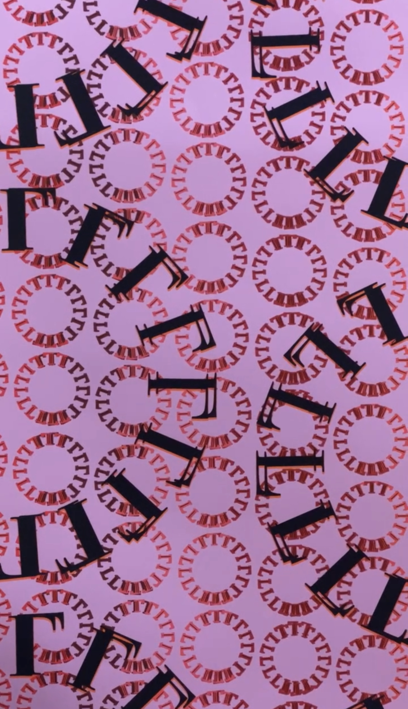

Scroll down and press on an image for the gallery!
Our film takes inspiration from the posters around the classroom.
We realised the possibility of patterns overlapping with our everyday lives and created our piece from that.
Students walking to class, cats relaxing around campus, and the breeze blowing between the trees are all patterns we tend to overlook.
This piece brings them to the forefront.
This webpage is the final product of the 30MFF assignment for the Communications Lab course at NYUAD.



×